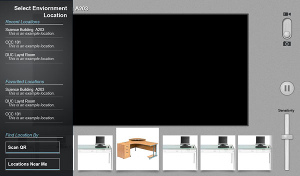
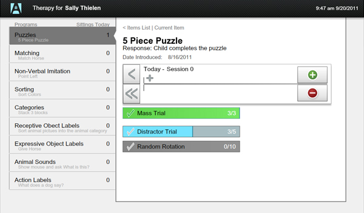

256 Design
Portfolio For
Spencer Oberstadt
Blog
I write some things sometimes. There aren't a lot of things that I
find out myself, but I want to put those few things out there. I
encourage you to check it out, maybe bookmark some of the posts if
they are something you work with.
> 256 Blog
Programming isn't just a job, it's a mindset. I am passionate
about finding different ways to look at a system or process. The
trendy technology and tools are important, and exciting, but you
don't always use your brand new stud finder to fix the kitchen sink.
Anyone can make a new Facebook or blog site, but what gets me coming
back to a project is if it actually helps real people.

MPDX - Mobile
June 2012 - Current
Coolness: 10
Main Technology: HTML/CSS/JS
Click Again To See More

Project Tansparency
September 2011 - Current
Coolness: 8
Main Technology: Java for Android
Click Again To See More

Mobile Enviornment Detection
November 2011
Coolness: 5
Click Again To See More

Data Entry App for Autism Therapy
July 2011 - November 2011
Coolness: 8
Main Technology: Adobe Flex
Click Again To See More
MPDX - Mobile
Ministy Partner Development Connexion

In June 2012, I traveled to Orlando, FL and worked with a team on to
build a mobile access portal for MPDX.org. MPDX is being designed as the
new web application solution for missionaries who raise their own
financial support. My role was leading the mobile apps team where I
worked with another member to train him in javascript development and
project management. We built the apps using Phonegap and are currently
targeting Android and iOS devices with offline applications and is also
accessible via the web. We chose PhoneGap because we wanted a fast
start-up time and the oppertunity to target any smart phone.
To start off the first week of the project, we worked to explore dynamic
view (HTML page) creation techniques and other tools we would need to
develop for a PhoneGap application. After becoming aquated with our new tool set, we made wireframes
to lay out some of the basic features we wanted on the different views.
After about a week of development, to help streamline development and
expansion, we looked into Javascript MVC
(more info)
frameworks and decided on using Backbone.js. After getting the hang of
Backbone.js, we were cooking with gas and had a published app on the Play
Store after about 2.5 months, with the last month me working solo.
During the first 2 months, we used a white board in the department to
make an extensive to-do list with each section of the app. As we
transitioned out of pair-programming, the remaining tasks were transfered
to the Github issues page
as the project approached it's beta releases. Now you can track the
current code base on the
Github repo.
The app is currently available on the
Android Play Store
and the Apple App Store!
Client
Cru (formally Campus Crusade for Christ)
Time Frame
June 2012 - Current
Project Transparency
Accountability Utility
Project Transparency was built with the vision of sharing daily updates
how you are doing to your accountability partners. I built the
application with Java for Android and have hopes of supporting other
platforms as well. For a back end, php was the weapon of choice connected
to a MySQL server.
All of the code for Project Transparency is availalbe on GitHub. Check
out the Android Code
and the Server Side.
Available on the Google Play Store
Time Frame
September 2011 - Current
Mobile Enviornment Detection

As many medical conditions can inhibit cognitive abilities, the Mobile
Environment Detection project was designed to help people who struggle in
new environments turn that space into a learning atmosphere. In different
locations, facilitators could "capture" items or locations in the space
and provide descriptions on whenever was relevant. My role on the project
was to do the interface design and begin the groundwork for implementing
an Augmented Reality engine.
Client
University of Wisconsin - Stevens Point
Time Frame
November 2011 - December 2011
Smart Data Entry App for Autism Therapy

Extensive records are common in home therapy for a child with autism.
Line therapists are given a list of assigned program items (things for
the child to work on learning) and begins the process of continually
practicing that item until success regularity increases. This process
while providing good structure, was slow to adapt and did not allow for
use of the testing data after 2 weeks. Out of these problems rose the
Smart Data Entry App for Autism Therapy, where instead of having to write
each time you complete a trail with the child, you can enter that into a
tablet, where that data can be accessed in real time by a senior
therapist and can be utilized later in therapy to show things like
changes in acquisition speed.
This app was built as a suite of tools (Mobile Enhanced Autism Therapy)
built to further different areas in the autism therapy field.
Client
University of Wisconsin - Stevens Point
Time Frame
July 2011 - November 2011